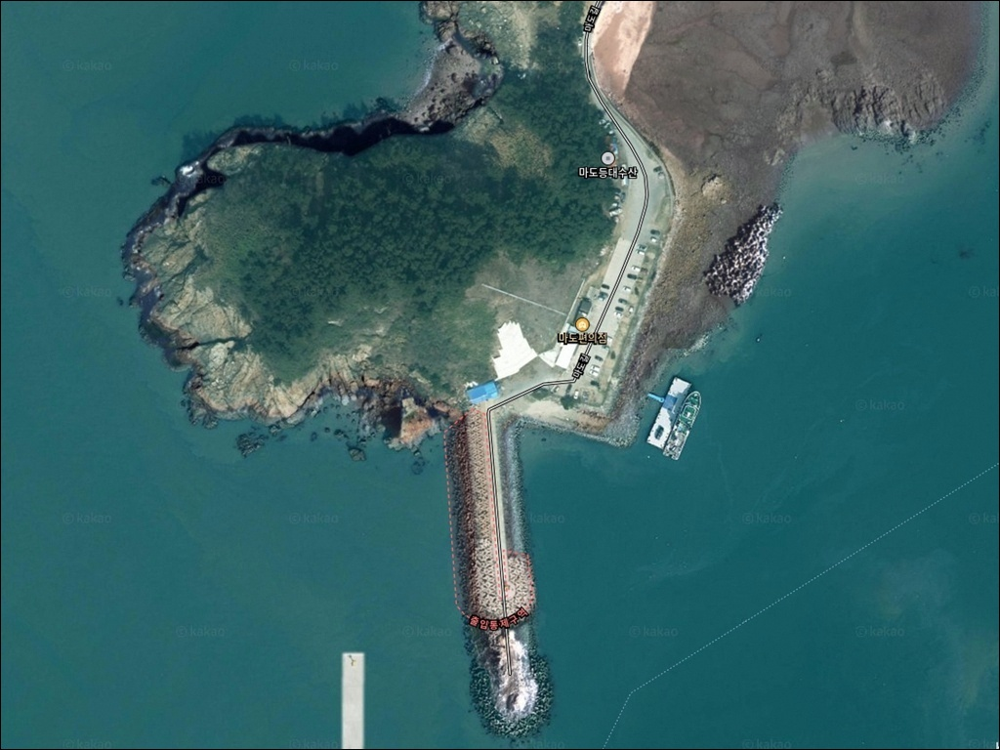
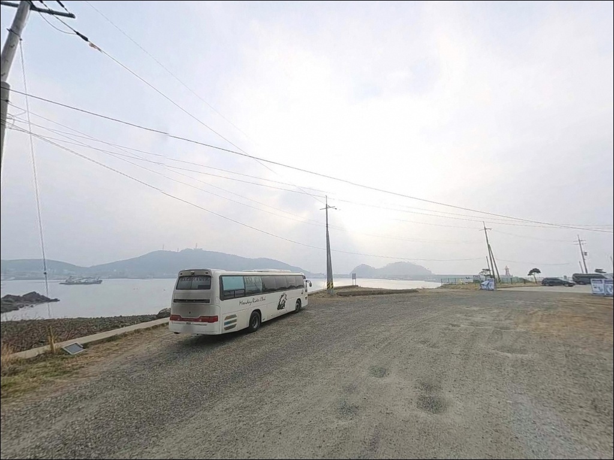
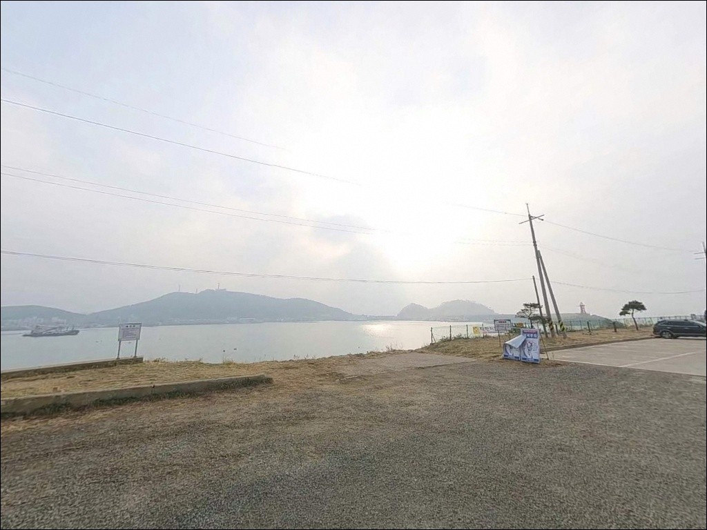
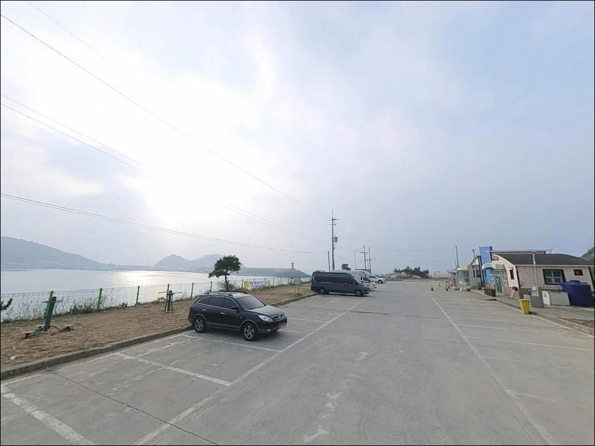
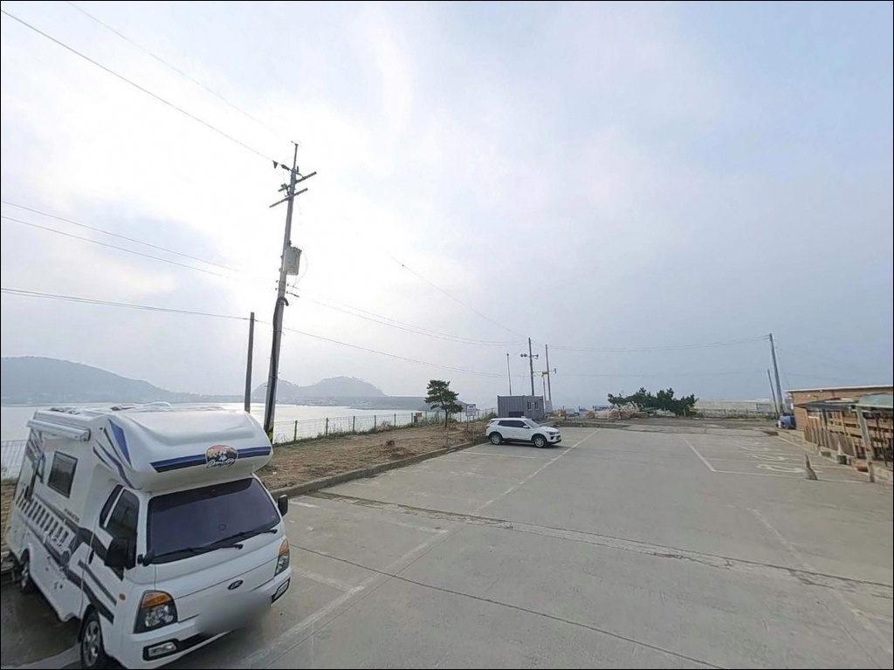
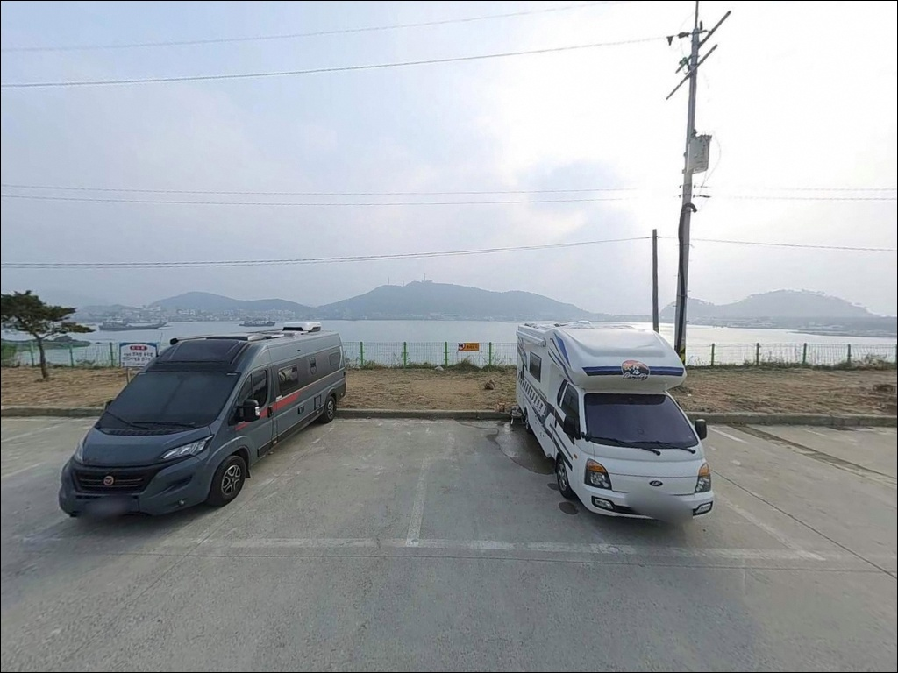
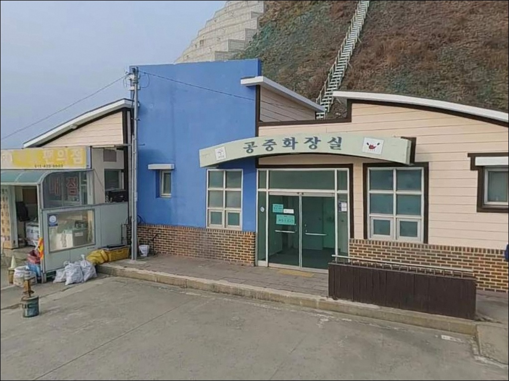
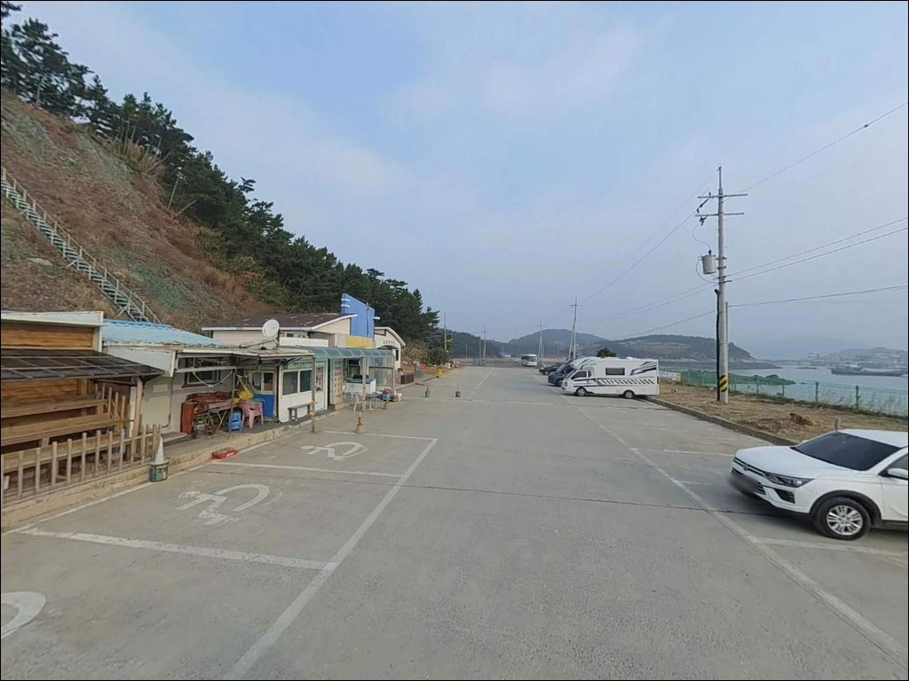
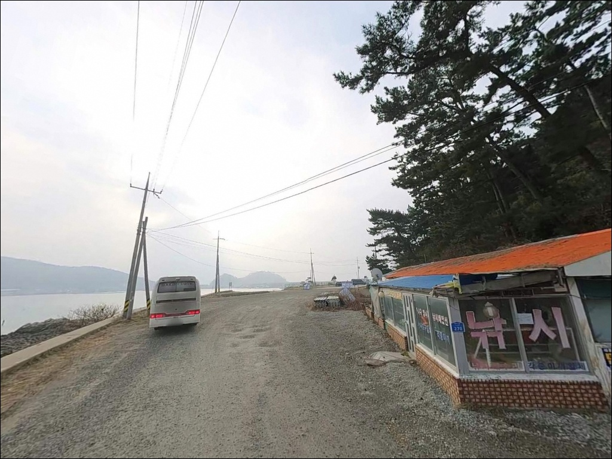

마도 방파제, 충남 태안군 한적한 분위기의 차박, 낚시 장소
이 페이지에는 광고(제휴 링크 포함)가 있으며, 광고 링크를 통해 구매하면 운영자가 판매 수익 또는 수수료를 받을 수 있습니다. 포인트 사진: 카카오맵 스카이뷰·로드뷰. 이 페이지의 지도·사진 이미지는 카카오맵의 실제 서비스 이미지와 다를 수 있습니다.


포인트 안내
마도 방파제
충남 태안군 근흥면 신진도리 234-5
마도 방파제에서 가장 흔한 실수는
시즌 주말 낮 시간에 여유롭게 출발하는 것입니다.
방파제 끝단과 외항 쪽 자리는
이른 아침부터 채워지는 구조라,
원하는 자리에서 낚시를 시작하려면
도착 시간이 조과보다 먼저 결정되는 경우가 많습니다.
신진도와 마도 사이 협수로를 품은 이 방파제는
태안권에서 접근성과 낚시 여건을 모두 갖춘
서해 대표 생활형 포인트로 알려져 있습니다.
이 글은 마도 방파제의 진입 구조, 차박 여건,
지형 기반 낚시 여건과 스타일 선택 기준에 집중합니다.
조황 단정이나 특정 어종 보장은 이 글의 범위에 포함되지 않습니다.

1. 진입 동선과 포인트 접근성
마도 방파제로 가려면 서해안고속도로 서산IC 이후
32번 국도를 타고 태안 방향으로 진입한 뒤
신진대교를 건너 신진도를 거쳐 마도로 들어가는 루트가
일반적으로 안내되는 경로입니다.
네비게이션 목적지로는
마도길 280 또는 285 일대가 자주 쓰입니다.
방파제 초입에는 넓은 주차 공간이 갖춰져 있어
승용차와 SUV 모두 비교적 수월하게 정차할 수 있습니다.
다만 방파제 끝단으로 갈수록 회차 공간이 좁아지는 구조라,
캠핑카나 대형 차량이라면
초입 주차장에 세우고 도보로 이동하는 방식이 현실적입니다.
시즌 주말에는 주차 공간 자체도 경쟁이 붙는 편입니다.
낚시 인구가 몰리는 봄~가을 시즌이라면
오전 일찍 진입하거나 평일을 택하는 것이
자리 선택 폭을 넓히는 방법입니다.
방파제 끝단 자리는 조류 흐름이 집중되어
루어 반응이 살아나는 자리입니다.

2. 차박 환경과 야간 체류 여건
차박이란 차량을 숙박 공간으로 활용하며
현장에서 하룻밤 머무는 여행 방식입니다.
마도 방파제 초입에는 공중화장실과 개수대가 갖춰져 있어
차박에 필요한 기본 인프라는 어느 정도 확보된 편입니다.
다만 이 지역은 관광·낚시 안내에도 빠질 만큼 알려진 포인트라,
야간에도 낚시객 차량이 오가는 분위기입니다.
신진도항과 연결된 지역 특성상
항구 불빛과 차량 이동이 이어지는 편이어서
완전한 고요함을 원하는 차박에는 적합하지 않습니다.
외항 노출 구조로 인해 기상에 따라
바람 영향을 받는 경우도 있으니
출발 전 풍속 예보를 함께 확인하는 편이 안전합니다.
차박이나 야영 관련 안내 표지가 현장에 있는 것으로 알려져 있습니다.
현행 규정은 시기와 지자체 정책에 따라 달라질 수 있으므로,
방문 전 현장 표지를 직접 확인하고
체류 방식을 결정하는 것이 가장 안전한 준비입니다.


3. 주변 편의시설 및 인프라 현황
방파제 초입에는 공중화장실과 개수대가 있으며,
마도 내 소규모 편의점도 여러 후기에서 언급됩니다.
다만 운영 시간과 현황은 방문 시기에 따라 달라질 수 있으므로
출발 전 주요 소품과 식수는 미리 챙기는 편이 안전합니다.
신진도항 쪽으로 이동하면 인프라가 크게 달라집니다.
CU와 이마트24가 신진도항 일대에 있으며,
식당과 주유소도 몇 분 거리에 갖춰져 있어
본격적인 보급은 신진도항을 기점으로 삼는 방식이 효율적입니다.
부족한 낚시 소품이 생겼을 때에도
신진도항 주변이 가장 빠른 보급 동선입니다.

4. 방문 전 반드시 챙겨야 할 준비사항
마도 방파제 방문 전에 가장 먼저 확인할 것은 물때입니다.
서해는 조차가 커서 간조와 만조 사이 수심 차이가 상당하고,
신진도와 마도 사이 협수로는 조류 소통이 활발한 구조입니다.
바다타임에서 태안 근흥 기준 물때를 확인하고
조류가 적당히 흐르는 타이밍에 맞춰
입장 시각을 잡는 것이 기본 전략입니다.
서해는 기상 변화가 빠른 편이라
당일 아침 풍속과 파고를 다시 한번 확인하는 습관이 중요합니다.
방파제 끝단과 갯바위 구간은 테트라포드가 설치된 곳이 있어
미끄럼 방지 신발과 구명조끼는 필수입니다.
갯바위와 테트라포드 접경 구간은 밑걸림이 잦은 편이므로
여분 채비를 넉넉히 준비하는 것이 좋습니다.
마도 방파제는 어선이 오가는 항구 구역입니다.
주차 후에는 어선 이동 동선을 확인하고
어구에 접촉하지 않는 자리를 우선 잡는 것이 기본 매너입니다.
낚시줄과 쓰레기 회수도 반드시 지켜야 합니다.

5. 지형 기반 낚시 여건 분석
마도 방파제는 신진도항의 북방파제 역할을 하는 구조로,
신진도 방파제(남방파제)와 수로를 사이에 두고 마주 보고 있습니다.
외항과 내항이 뚜렷하게 나뉘고,
방파제 측면에는 테트라포드가 설치된 구간이 있습니다.
초입 쪽은 수심이 3~5m 수준이며,
중간 이후 끝단으로 갈수록 6~8m 정도까지 깊어지는 흐름입니다.
신진도와 마도 사이 협수로는 조류 소통이 활발한 편이라
끝단과 수로 입구 쪽에서 조류 흐름이 집중되는 구조입니다.
이런 지형에서는 조류를 타고 이동하는 회유성 어종이
끝단 주변을 통과하는 경향이 있어
끝단 자리가 외항에서 핵심 포인트로 불리는 이유이기도 합니다.
방파제 주변으로 갯바위 구간도 형성되어 있어
석축 경계를 따라 탐색할 수 있는 라인이 존재합니다.
내항 쪽은 조류가 완만하고 수심이 비교적 얕아
초보 낚시인도 접근하기 쉬운 조건입니다.
다만 갯바위 구간은 밑걸림이 심한 자리가 있으므로
채비를 너무 깊이 끌지 않는 편이 손실을 줄이는 방법입니다.
가기 전에 최신 조황은 꼭 검색해 보시기 바랍니다.


6. 포인트에 어울리는 낚시 스타일
방파제 외항과 끝단에서는 루어낚시가 잘 맞는 구조입니다.
조류 흐름이 집중되는 끝단 일대는
우럭·광어·농어 계열을 노리기에 적합한 조건이며,
수온이 오르는 봄~가을 시즌에는
고등어와 삼치 등 회유성 어종의 접근 가능성도 있는 편입니다.
방파제 내항과 초입 구간에서는 원투낚시가 주류입니다.
수심이 일정하고 조류가 완만한 이 구간에서는
도다리·붕장어·노래미 등을 바닥 채비로 노리는 패턴이 잘 어울리고,
채비를 멀리 던져두고 기다리는 방식으로
편하게 진행할 수 있는 낚시 구조입니다.
방파제 꺾임 구간과 갯바위 접점에서는 찌낚시도 고려해볼 만합니다.
조류 흐름이 바뀌는 구간에 찌를 띄우면
감성돔이나 학공치를 노리는 찌낚시 여건이 형성될 수 있습니다.
갯바위 쪽으로 이동하면 루어로 우럭을 탐색하는 방식도 가능합니다.
시즌 주말 마도 방파제에서는 도착 시간이 자리 선택의 폭을 결정합니다.

7. 마도 방파제 자리 없을 때 바로 이동할 대안 포인트
마도 방파제에 자리가 없거나
조류 여건이 맞지 않을 때 가장 먼저 이동할 곳은
신진도 방파제입니다.
수로를 사이에 두고 마도 방파제와 마주 보는 위치로,
같은 조류 영향권 안에 있어
물때 판단을 따로 다시 할 필요가 없습니다.
남방파제 길이가 약 550m 수준으로 자리 여유가 있는 편이며,
우럭·감성돔·학공치를 노리는 낚시인들이 많이 찾는 포인트입니다.
신진도 방파제에도 자리가 없다면
안흥항 방파제가 다음 대안입니다.
규모 있는 국가어항으로 시설이 안정적이고,
방파제와 갯바위를 함께 활용할 수 있는 구조입니다.
마도와 같은 만 구조 안에 위치하여
이동 거리와 조류 조건이 큰 차이 없는 편입니다.
차박 여건을 우선으로 고려한다면
신진도 공영주차장(충남 태안군 근흥면 신진대교길 174)이
마도보다 나은 선택일 수 있습니다.
하나로마트, 매점, 공중화장실이 갖춰져 있어
마도 방파제보다 편의 접근성이 높고,
차량 규모에 상관없이 여유 있게 주차할 수 있습니다.

물때와 도착 타이밍이 맞으면,
마도 방파제는 충분한 포인트입니다
원투낚시·루어낚시를 두루 즐기는 낚시인이라면
마도 방파제의 외항·내항 혼합 구조는 잘 맞는 여건입니다.
수심 변화가 있고 조류 흐름도 살아 있어
다양한 낚시 방식으로 운용할 수 있고,
신진도항까지 이어지는 인프라 덕분에
보급 걱정 없이 출조 계획을 잡을 수 있는 곳입니다.
다만 서해 물때를 모르고 방문하거나
시즌 주말 낮 시간에 여유롭게 도착하면
원하는 자리에 서지 못하는 상황을 맞닥뜨릴 수 있습니다.
물때 확인, 이른 도착, 갯바위 구간 안전 장비,
이 세 가지를 갖추면 마도 방파제는 기대에 가까운 출조가 됩니다.
낚시 후 조용히 하룻밤 머무는 차박을 생각한다면
현장 안내 표지를 먼저 확인하고,
소란스럽지 않은 체류를 원하는 낚시인이라면
신진도 공영주차장 일대를 기점으로 삼아
마도 방파제를 오가는 동선도 충분히 현실적인 방법입니다.